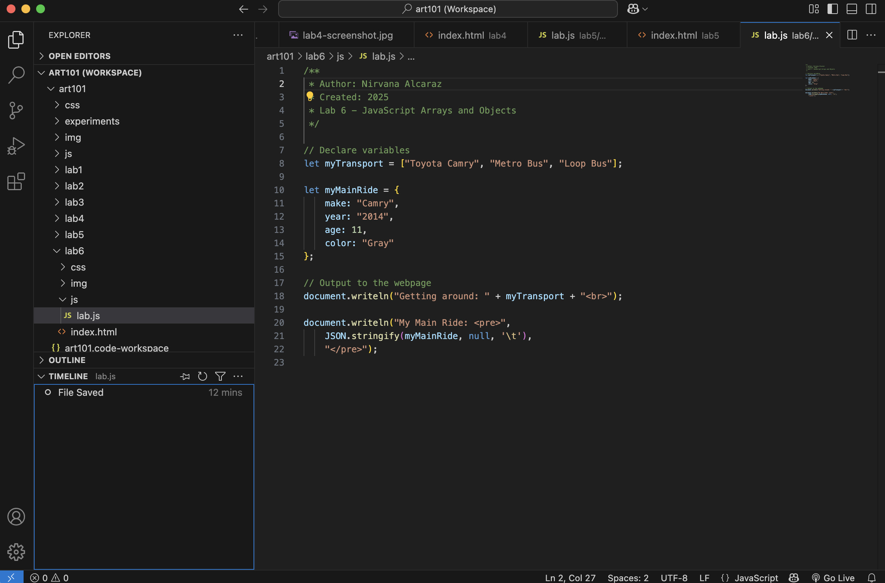
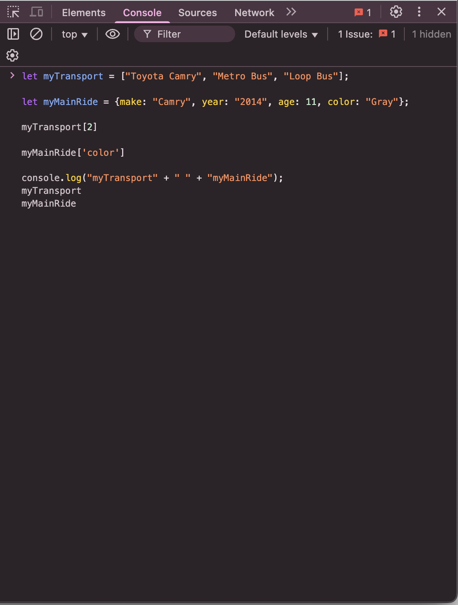

The challenge of this lab was to create arrays and objects in JavaScript and display them neatly using document.writeln(). It was also necessary to think carefully about how to structure the information in a way that would make sense visually and in code.
One problem was figuring out how to properly format the object output so it would look organized on the page. Another issue was making sure that JavaScript and HTML files were properly linked so the script would run without errors.
Below is the output from the JavaScript program and screenshots showing the array, object, and console testing. The final webpage successfully displays the transportation list and main ride information as planned.
 This lab helped me practice creating and organizing JavaScript arrays and objects. It also showed how small formatting details can make a huge difference in readability and debugging later on. Overall, completing this lab made me feel more comfortable combining HTML, CSS, and JavaScript in one project.